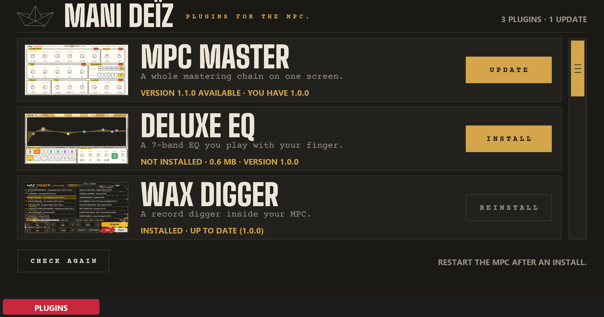
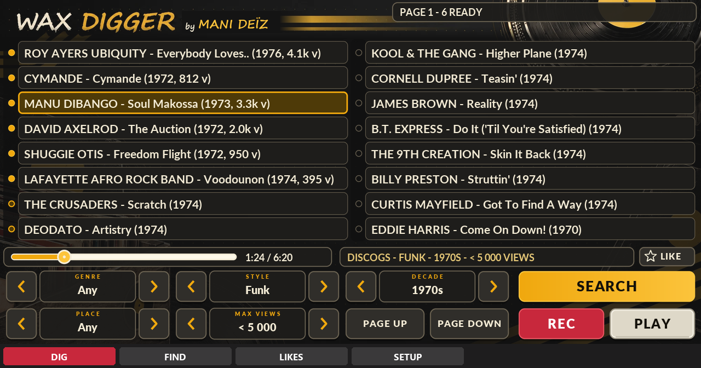
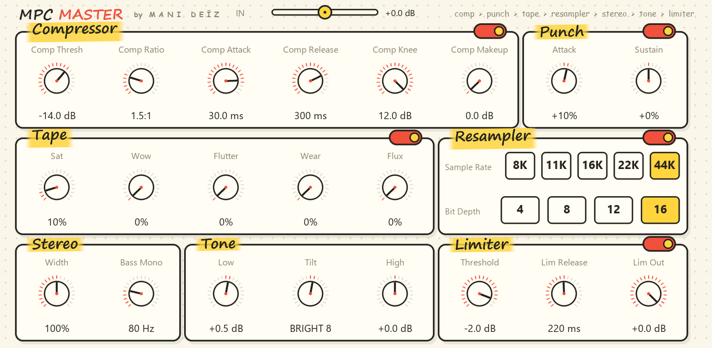
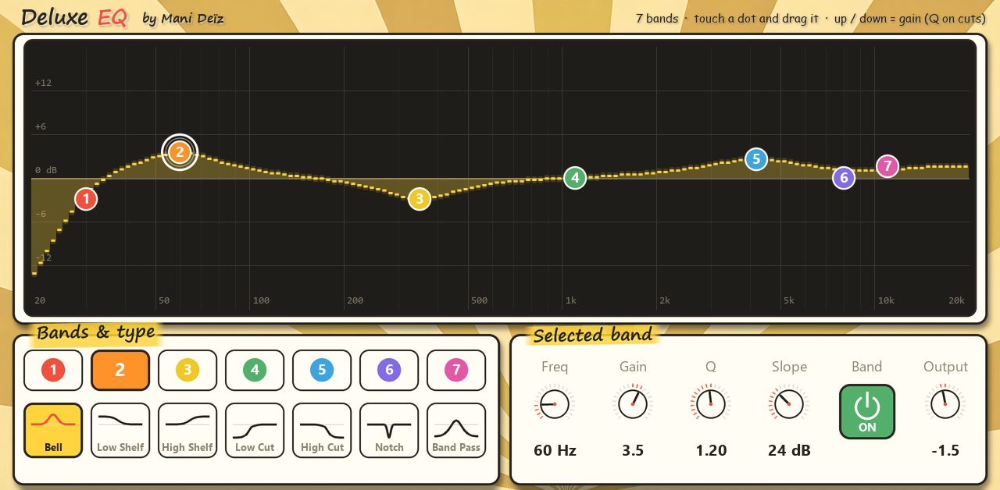
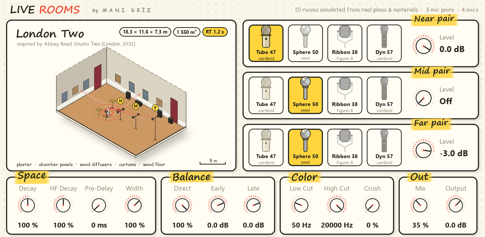
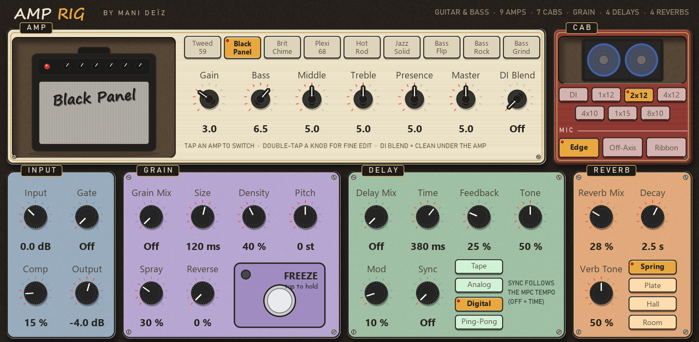

Download
Get the Hub zip above and unzip it.
Made by a beatmaker, on the machine they run on. Download the Hub once: everything else installs from the MPC.

Every MANI DEÏZ plugin, on the MPC screen. Touch INSTALL and it is on your drive. When a new version comes out, the Hub says so: touch UPDATE. Over Wi-Fi or Ethernet, no computer after the first install.
Once, on your computer
Get the Hub zip above and unzip it.
Put the folder found inside “VST2 Plugins” into the “VST2 Plugins” folder at the root of your SD card or USB drive. No “VST2 Plugins” folder there? Create it yourself, with exactly that name: the MPC does not make it.
On the MPC: Preferences, Enhancements (Beta). Enable Enhancements and External Plugin Support. Restart.
Then, on the MPC
Make a plugin track and pick Mani Deïz Hub, under MANI DEÏZ. Connect the MPC to the network first.
On the plugin you want. Install as many as you like, one after the other.
Restart the MPC: the new plugins are listed under MANI DEÏZ.
You need MPC OS 3.10.1 or later: older firmware cannot load third-party plugins. Made on the MPC Live III; built for the older MPCs too, not tried on them yet.

A record digger inside your MPC.
Free · beta · 70 MB
A whole mastering chain on one screen.
Free · 0.8 MB
A 7-band EQ you play with your finger.
Free · 0.6 MB
Real rooms and echo chambers around your sounds.
Free · 62 MB
A whole guitar and bass rig in one insert.
Free · 1.5 MBSearch, tap a title, hear it at once, record the part you want. It runs on the MPC itself, over Wi-Fi or Ethernet: no computer, no phone.
Put it on your master or on a drum bus and finish the beat without leaving the MPC. Everything is on one page, in the order the sound goes through it.
An equalizer made for a touch screen. Seven bands, each one a coloured dot sitting on the curve: touch it, drag it, hear it.
Not an algorithmic reverb: fifteen rooms built from their plans and materials, simulated physically and heard through three pairs of virtual microphones.
Plug your guitar or your bass into the MPC and play through nine amps, seven cabinets and a pedal board, all on one touch page.
Write to manideiz.plugins@proton.me with your MPC model, its MPC OS version and what happened. Attach the log files from the plugin folder on your drive (hub_log.txt for the Hub, wax_log.txt and engine_log.txt for Wax Digger): they say what went wrong.
The plugins and the Hub are © MANI DEÏZ, all rights reserved. They are free to use; please share the link to this page rather than re-uploading the files.
They are independent plugins, not made, endorsed or supported by Akai Professional. “MPC” and “Akai Professional” are trademarks of inMusic Brands, Inc.
No network on your MPC? Each plugin's GitHub page explains how to install it by hand.